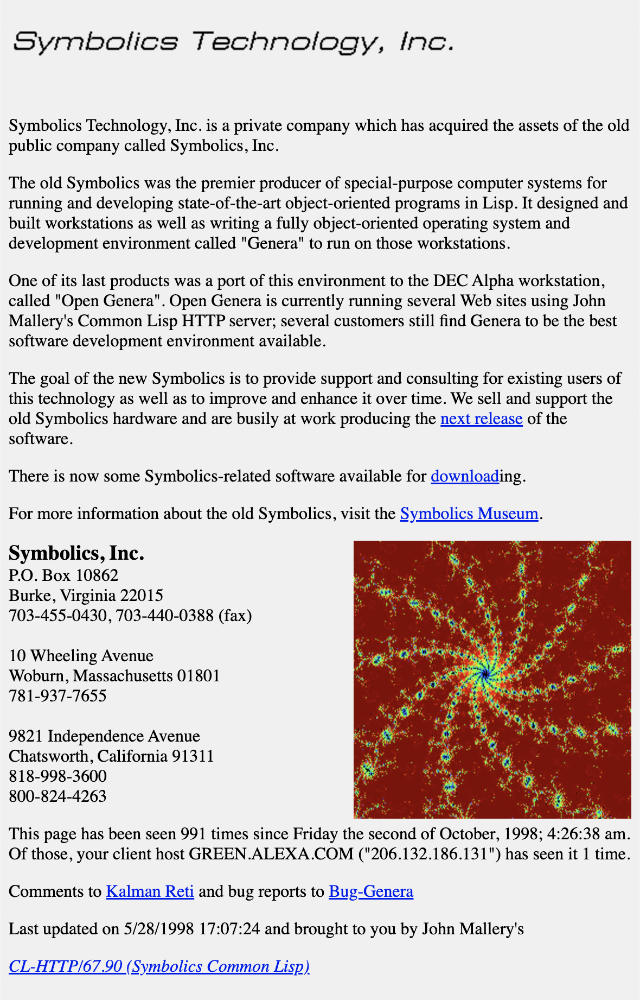

Before the Domain Name System (or DNS for short) was invented, people had to manually add to their HOSTS.TXT file.
Elizabeth Feinler maintained the first address directory at the Network Information Center. People had to contact the center to manually add to their own HOSTS.TXT file. Her team also developed first concept of domains, with the idea of names like .edu floating in the air. This early concept of domains laid the groundwork for the hierarchical structure of the modern Domain Name System.
Paul Mockapetris replaced the manual operation of looking up and mapping addresses with an automated distributed database, mapping domain names to addresses (example.com -> 64.6.98.185).
Symbolics.com became the first (and longest) ever domain to be registered, marking the beginning of the commercialization and expansion of the internet domain space.
After a few iterations of the DNS, domain hierarchies allowed for higher management of pages, conisting of top-level domains (TLDs), second-level domains (SLDs), and subdomains.
Digital colonialism here refers to the exploitation of country domain extensions for economic gain. With certain country domains having more prominent access than others.
The introduction of domain hierarchies allocated specific top-level domains (TLDs) to individual countries, giving rise to country-code TLDs (ccTLDs). This allowed some individuals to get a bit clever with their domain names.
The country of Tuvalu, which owns rights to the domain .tv, enabled the small island country to capitalize and make millions of dollars a year on the popularity of streaming services like Twitch.tv.


The .io domain extension is also a popularly used country domain. The domain extension belongs to the British Indian Ocean Territory. However, it gained wide usage in the tech and gaming communities due to the domain representing input/output (IO) operations in computing. IO games became especially popular and used the domain name for for creative branding.